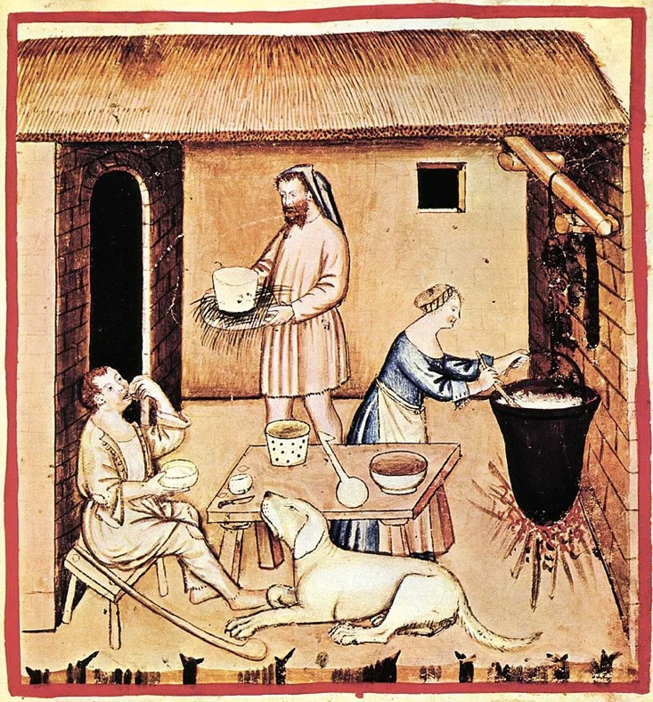

Cheese at Home

This is a recipe taken from allrecipes.com, a homemade Farmer's Cheese
A Polish cheese, it's supposedly easy to make. No it doesn't age well, but it's a perfect soft snack cheese (according to the person who created the recipe on the site).
This is actually how it would look...
.png)
Ingredients
- 1 gallon whole milk
- 1 pinch salt
- 1 large lemon, juiced
Steps
- Pour the milk into a large pot, and stir in a pinch of salt. Bring to a boil over medium heat, stirring occasionally to prevent the milk from scorching on the bottom of the pot.
- When the milk begins to boil (small bubbles will first appear at the edges), turn off the heat. Stir lemon juice into the milk, and the milk will curdle. You may need to wait 5 or 10 minutes.
- Line a sieve or colander with a cheesecloth, and pour the milk through the cloth to catch the curds. What is left in the cheesecloth is the Farmer's Cheese. The liquid is the whey. Some people keep the whey and drink it, but I throw it away. Gather the cloth around the cheese, and squeeze out as much of the whey as you can. Wrap in plastic, or place in an airtight container. Store in the refrigerator.
Cheese Outside
Otherwise known as the history of cheese
The process of ancient cheesemaking is very simple, you leave vats of milk outside for long periods. After this the cheese will start to separate into clumps (curds) and liquid (whey). After a process of treating the mixture with rennets (enzymes from animal stomachs), and straining the whey out, you can make some ancient cheese.